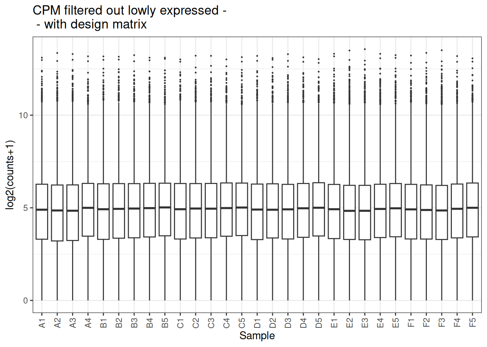
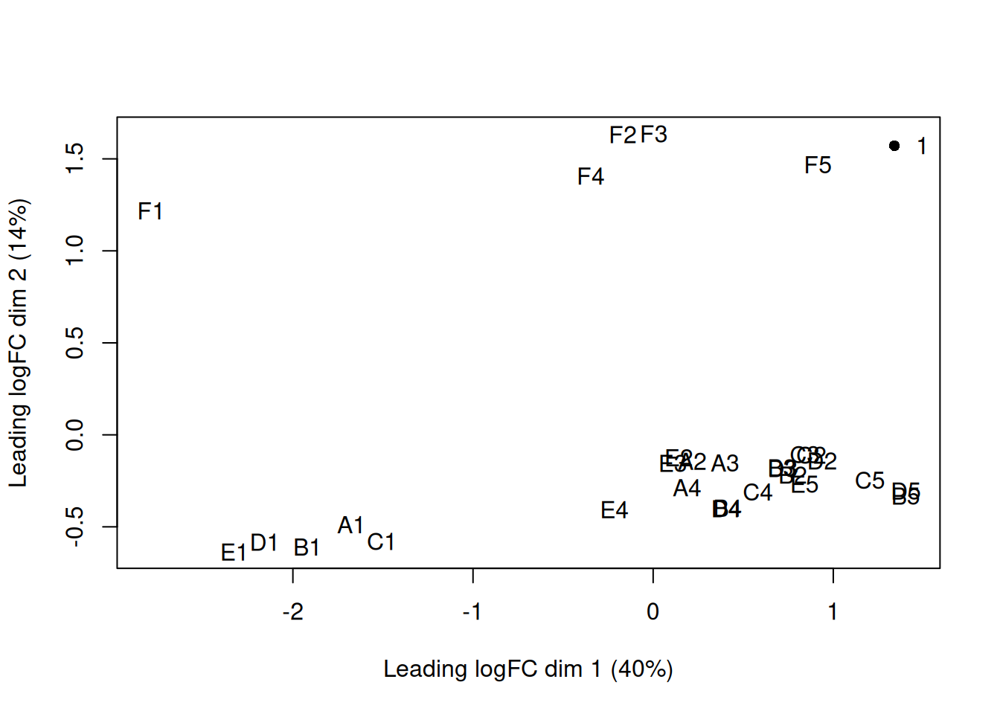
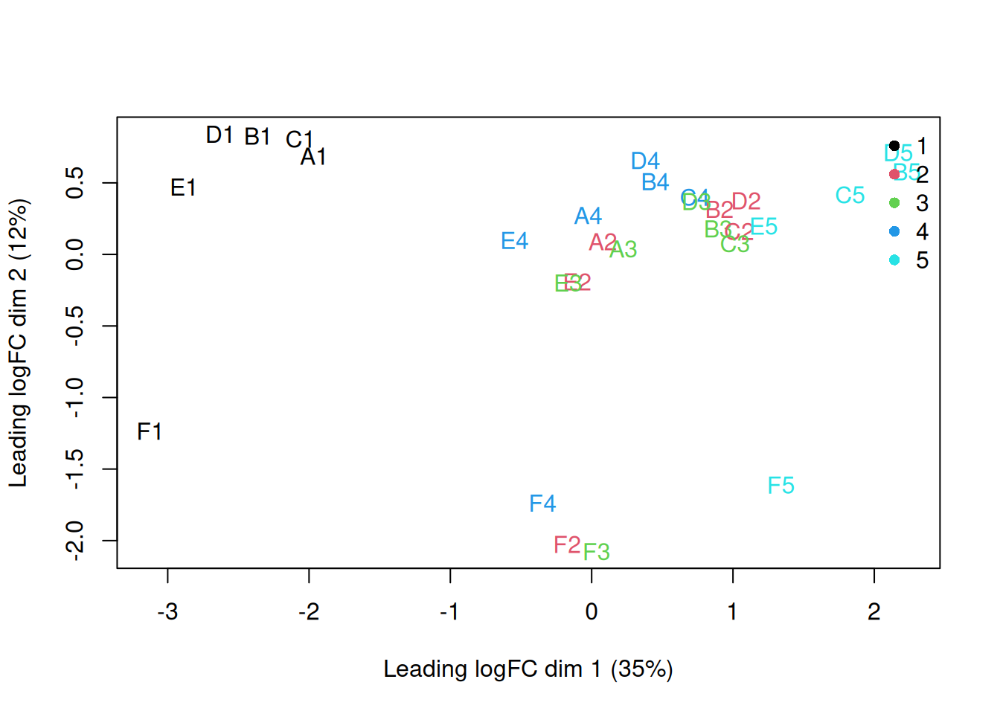
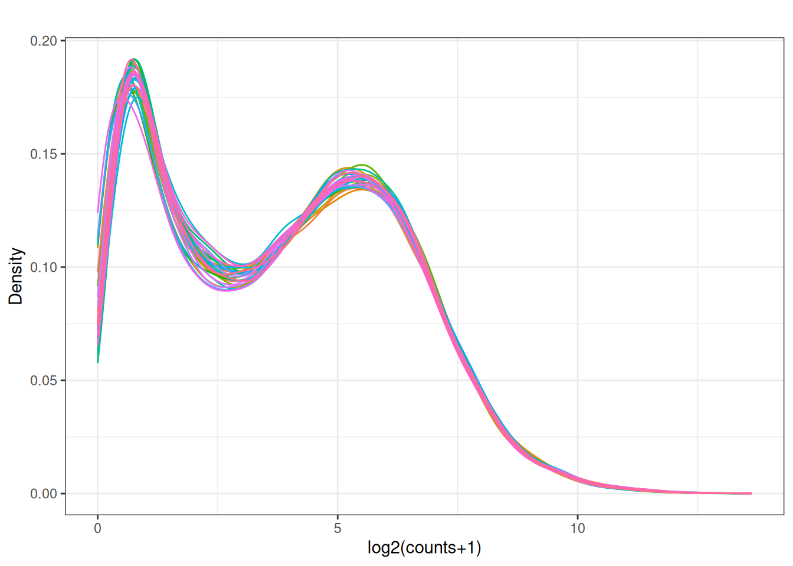
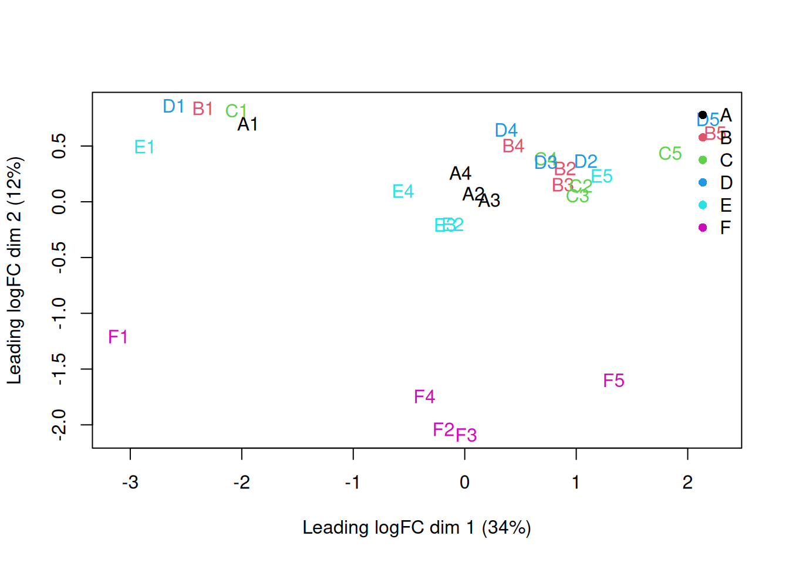

Chapter 5 Worked normalization examples
We will demonstrate exploratory normalization steps on the expression datasets.
5.2 load Some data
## Loading required package: Biobase## Loading required package: BiocGenerics## Loading required package: generics##
## Attaching package: 'generics'## The following objects are masked from 'package:base':
##
## as.difftime, as.factor, as.ordered, intersect, is.element, setdiff,
## setequal, union##
## Attaching package: 'BiocGenerics'## The following objects are masked from 'package:stats':
##
## IQR, mad, sd, var, xtabs## The following objects are masked from 'package:base':
##
## anyDuplicated, aperm, append, as.data.frame, basename, cbind,
## colnames, dirname, do.call, duplicated, eval, evalq, Filter, Find,
## get, grep, grepl, is.unsorted, lapply, Map, mapply, match, mget,
## order, paste, pmax, pmax.int, pmin, pmin.int, Position, rank,
## rbind, Reduce, rownames, sapply, saveRDS, table, tapply, unique,
## unsplit, which.max, which.min## Welcome to Bioconductor
##
## Vignettes contain introductory material; view with
## 'browseVignettes()'. To cite Bioconductor, see
## 'citation("Biobase")', and for packages 'citation("pkgname")'.## Setting options('download.file.method.GEOquery'='auto')## Setting options('GEOquery.inmemory.gpl'=FALSE)##
## Attaching package: 'dplyr'## The following object is masked from 'package:Biobase':
##
## combine## The following objects are masked from 'package:BiocGenerics':
##
## combine, intersect, setdiff, setequal, union## The following object is masked from 'package:generics':
##
## explain## The following objects are masked from 'package:stats':
##
## filter, lag## The following objects are masked from 'package:base':
##
## intersect, setdiff, setequal, union## Loading required package: tidyverse## Error: package or namespace load failed for 'tidyverse':
## .onAttach failed in attachNamespace() for 'tidyverse', details:
## call: library(pkg, lib.loc = loc, character.only = TRUE, warn.conflicts = FALSE)
## error: there is no package called 'lubridate'## Installing package into '/usr/local/lib/R/site-library'
## (as 'lib' is unspecified)## Warning: package 'tidyvers' is not available for this version of R
##
## A version of this package for your version of R might be available elsewhere,
## see the ideas at
## https://cran.r-project.org/doc/manuals/r-patched/R-admin.html#Installing-packages## Using locally cached version of supplementary file(s) GSE119732 found here:
## data/GSE119732/GSE119732_count_table_RNA_seq.txt.gzpath <- file.path("data", gse)
files <- list.files(path, pattern = "\\.txt.gz$|\\.tsv.gz$|\\.csv.gz$",
full.names = TRUE, recursive = TRUE)Raw table preview
library(readr)
safe_read <- function(file) {
# First attempt: read as TSV
df <- tryCatch(
readr::read_tsv(file, show_col_types = FALSE),
error = function(e) NULL # catch fatal errors
)
# If read_tsv failed entirely:
if (is.null(df)) {
message("TSV read failed — reading as space-delimited file instead.")
return(readr::read_table(file, show_col_types = FALSE))
}
# If read_tsv returned but with parsing issues:
probs <- problems(df)
if (nrow(probs) > 0) {
message("Parsing issues detected in TSV — reading as space-delimited file instead.")
return(readr::read_table(file, show_col_types = FALSE))
}
# If everything was fine:
return(df)
}
x <- safe_read(files[1])
kable_head(x[, 1:min(6, ncol(x))], 5, paste(gse,": raw table preview"))| gene_id | A1 | A2 | A3 | A4 | B1 |
|---|---|---|---|---|---|
| ENSG00000223972.5 | 0 | 0 | 0 | 0 | 0 |
| ENSG00000227232.5 | 79 | 119 | 84 | 50 | 80 |
| ENSG00000278267.1 | 17 | 10 | 22 | 19 | 19 |
| ENSG00000243485.4 | 0 | 0 | 0 | 0 | 0 |
| ENSG00000237613.2 | 0 | 0 | 0 | 0 | 0 |


5.4 Convert the raw counts to Counts per million (CPM)
## Loading required package: limma##
## Attaching package: 'limma'## The following object is masked from 'package:BiocGenerics':
##
## plotMA
Visualize as a density plot as well

There are a lot of genes that have zero expression. That is the majority of them. So we need to get rid of them.
5.5 filter out lowly expressed genes
## No group or design set. Assuming all samples belong to one group.x_cpm_filtered <- x_cpm[to_remove,]
plot_box(x_cpm_filtered,main = "CPM filtered out lowly expressed - \nNO design matrix")
visualize this as density plot as well.

5.6 Incorporate a design matrix - description of the samples.
The above was usingn all of the samples the same but this dataset has varying sample types. I might be hard to figure it out just from column names as they are not so informative but let’s just guess
## [1] "gene_id" "A1" "A2" "A3" "A4" "B1" "B2"
## [8] "B3" "B4" "B5" "C1" "C2" "C3" "C4"
## [15] "C5" "D1" "D2" "D3" "D4" "D5" "E1"
## [22] "E2" "E3" "E4" "E5" "F1" "F2" "F3"
## [29] "F4" "F5"#design matrix -
samples <- colnames(x)[2:ncol(x)]
patient <- substr(samples, 1, 1)
celltype <- substr(samples, 2, nchar(samples))
sample_data <- data.frame(samples, patient, celltype)
design <- model.matrix(~ 0 + celltype,data = sample_data)
rownames(design) <- sample_data$samples
colnames(design) <- paste0("celltype", levels(factor(celltype)))
design## celltype1 celltype2 celltype3 celltype4 celltype5
## A1 1 0 0 0 0
## A2 0 1 0 0 0
## A3 0 0 1 0 0
## A4 0 0 0 1 0
## B1 1 0 0 0 0
## B2 0 1 0 0 0
## B3 0 0 1 0 0
## B4 0 0 0 1 0
## B5 0 0 0 0 1
## C1 1 0 0 0 0
## C2 0 1 0 0 0
## C3 0 0 1 0 0
## C4 0 0 0 1 0
## C5 0 0 0 0 1
## D1 1 0 0 0 0
## D2 0 1 0 0 0
## D3 0 0 1 0 0
## D4 0 0 0 1 0
## D5 0 0 0 0 1
## E1 1 0 0 0 0
## E2 0 1 0 0 0
## E3 0 0 1 0 0
## E4 0 0 0 1 0
## E5 0 0 0 0 1
## F1 1 0 0 0 0
## F2 0 1 0 0 0
## F3 0 0 1 0 0
## F4 0 0 0 1 0
## F5 0 0 0 0 1
## attr(,"assign")
## [1] 1 1 1 1 1
## attr(,"contrasts")
## attr(,"contrasts")$celltype
## [1] "contr.treatment"Filter use design information
to_remove_withdesign <- edgeR::filterByExpr(x_cpm,min.count = 3,
design = design)
x_cpm_filtered_withdesign <- x_cpm[to_remove_withdesign,]
plot_box(x_cpm_filtered_withdesign,main = "CPM filtered out lowly expressed - \n - with design matrix")
plot_density(x_cpm_filtered_withdesign,main = "CPM filtered out lowly expressed - \n - with design matrix")
5.7 Normalize Dataset using TMM
## Warning in filterByExpr.DGEList(dge): All samples appear to belong to the same
## group.dge_filtered <- calcNormFactors(dge_filtered , method = "TMM")
norm_cpm <- cpm(dge_filtered , log = FALSE, prior.count = 1)
plot_box(norm_cpm)

5.8 Look at the distribution of our samples in 2D space
y <- dge_filtered
plotMDS(y, top = 500, labels = colnames(y),
col = as.integer(y$samples$group))
legend("topright", legend = levels(y$samples$group),
col = seq_along(levels(y$samples$group)), pch = 16, bty = "n")
Now incorporate the design into the process
dge <- DGEList(counts = x[,2:ncol(x)],group = sample_data$celltype)
dge_filtered <- dge[filterByExpr(dge),]
dge_filtered <- calcNormFactors(dge_filtered , method = "TMM")
norm_cpm <- cpm(dge_filtered , log = FALSE, prior.count = 1)
plot_box(norm_cpm)

y <- dge_filtered
plotMDS(y, top = 500, labels = colnames(y),
col = as.integer(y$samples$group))
legend("topright", legend = levels(y$samples$group),
col = seq_along(levels(y$samples$group)), pch = 16, bty = "n")
Now incorporate the design into the process
dge <- DGEList(counts = x[,2:ncol(x)],group = sample_data$patient)
dge_filtered <- dge[filterByExpr(dge),]
dge_filtered <- calcNormFactors(dge_filtered , method = "TMM")
norm_cpm <- cpm(dge_filtered , log = FALSE, prior.count = 1)
plot_box(norm_cpm)

y <- dge_filtered
plotMDS(y, top = 500, labels = colnames(y),
col = as.integer(y$samples$group))
legend("topright", legend = levels(y$samples$group),
col = seq_along(levels(y$samples$group)), pch = 16, bty = "n")
5.9 Normalize the Dataset using RLE
## Loading required package: S4Vectors## Loading required package: stats4##
## Attaching package: 'S4Vectors'## The following object is masked from 'package:tidyr':
##
## expand## The following objects are masked from 'package:dplyr':
##
## first, rename## The following object is masked from 'package:utils':
##
## findMatches## The following objects are masked from 'package:base':
##
## expand.grid, I, unname## Loading required package: IRanges##
## Attaching package: 'IRanges'## The following object is masked from 'package:purrr':
##
## reduce## The following objects are masked from 'package:dplyr':
##
## collapse, desc, slice## Loading required package: GenomicRanges## Loading required package: GenomeInfoDb## Loading required package: SummarizedExperiment## Loading required package: MatrixGenerics## Loading required package: matrixStats##
## Attaching package: 'matrixStats'## The following object is masked from 'package:dplyr':
##
## count## The following objects are masked from 'package:Biobase':
##
## anyMissing, rowMedians##
## Attaching package: 'MatrixGenerics'## The following objects are masked from 'package:matrixStats':
##
## colAlls, colAnyNAs, colAnys, colAvgsPerRowSet, colCollapse,
## colCounts, colCummaxs, colCummins, colCumprods, colCumsums,
## colDiffs, colIQRDiffs, colIQRs, colLogSumExps, colMadDiffs,
## colMads, colMaxs, colMeans2, colMedians, colMins, colOrderStats,
## colProds, colQuantiles, colRanges, colRanks, colSdDiffs, colSds,
## colSums2, colTabulates, colVarDiffs, colVars, colWeightedMads,
## colWeightedMeans, colWeightedMedians, colWeightedSds,
## colWeightedVars, rowAlls, rowAnyNAs, rowAnys, rowAvgsPerColSet,
## rowCollapse, rowCounts, rowCummaxs, rowCummins, rowCumprods,
## rowCumsums, rowDiffs, rowIQRDiffs, rowIQRs, rowLogSumExps,
## rowMadDiffs, rowMads, rowMaxs, rowMeans2, rowMedians, rowMins,
## rowOrderStats, rowProds, rowQuantiles, rowRanges, rowRanks,
## rowSdDiffs, rowSds, rowSums2, rowTabulates, rowVarDiffs, rowVars,
## rowWeightedMads, rowWeightedMeans, rowWeightedMedians,
## rowWeightedSds, rowWeightedVars## The following object is masked from 'package:Biobase':
##
## rowMedianscounts <- x[,2:ncol(x)]
keep <- rowSums(counts >= 10) >= 2
counts_filtered <- counts[keep, ]
dds <- DESeqDataSetFromMatrix(countData = counts_filtered,
colData = sample_data,
design = design)## converting counts to integer mode